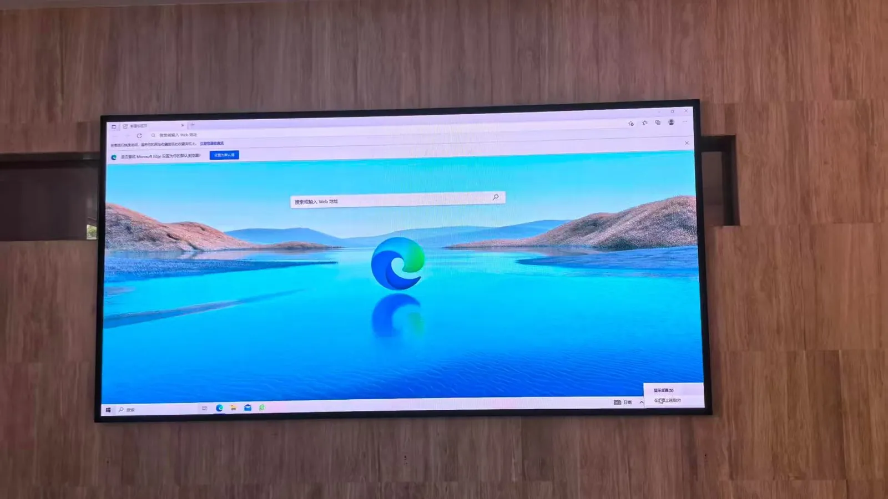
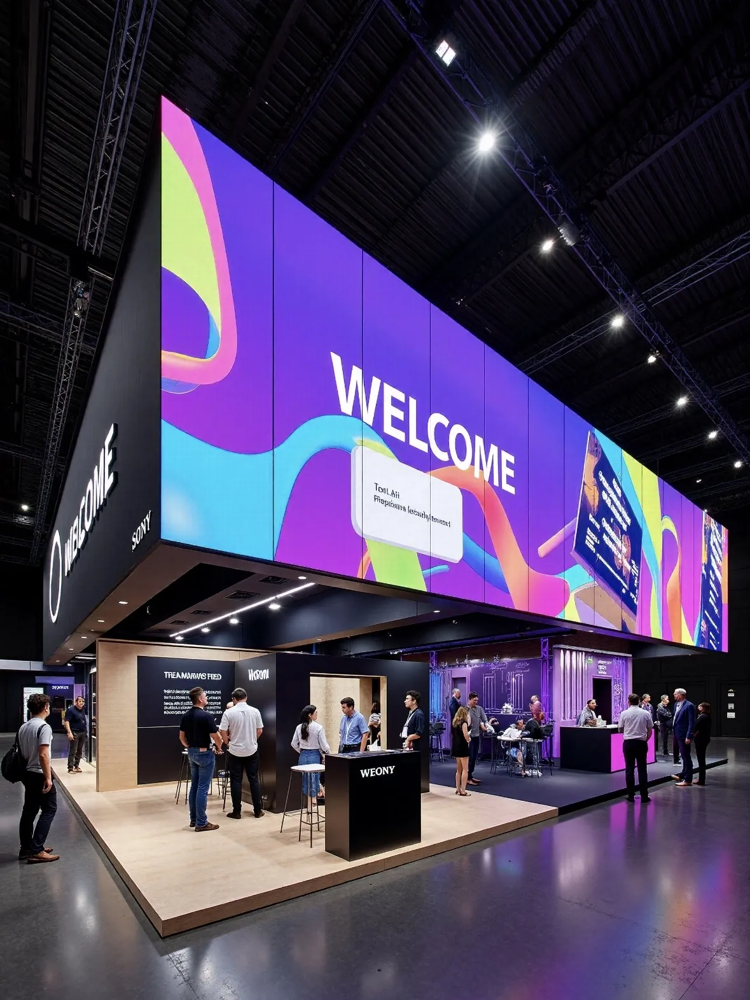
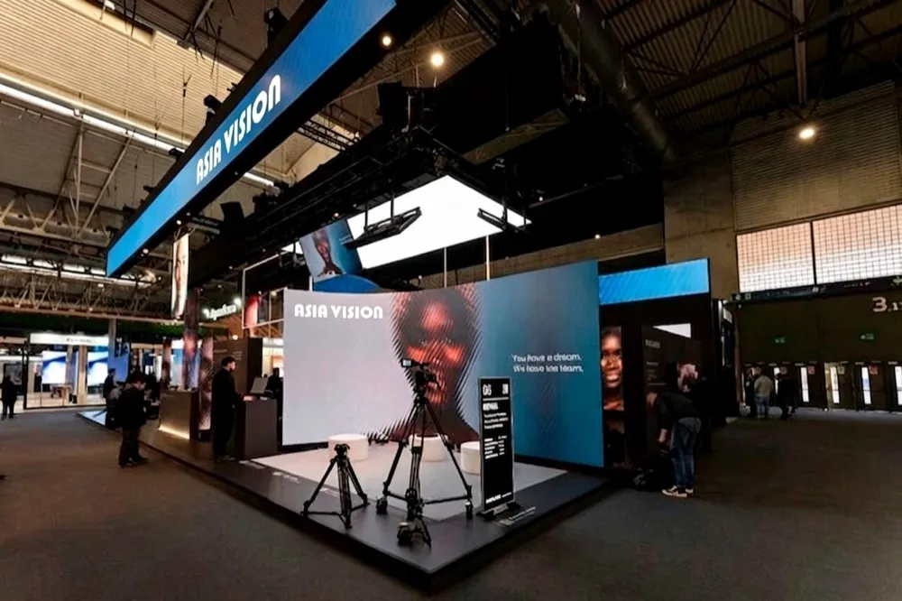

By David
A dvLED video wall is a direct-view LED display: a large, bezel-free image built from LED cabinets whose pixels emit their own light. Viewers look at the LEDs themselves, not at a projection screen and not at a grid of LCD monitors. In AV specifications, especially in the United States, dvLED is the usual term for what other markets simply call an LED display or LED video wall.
The name exists because “LED” alone is ambiguous — the same letters also describe the backlight inside an LCD panel. A buyer who searches for a “video wall” may be offered tiled LCD screens when the project actually needs an emissive, seamless surface with higher brightness, module-level service, and a size set by the cabinet grid rather than by fixed panel multiples.
This page is the definition and overview: what dvLED means, how it differs from an LCD video wall, typical pixel pitches, and the main applications. Lifetime cost is covered in the dvLED total cost of ownership guide. Building and wall-preparation issues are covered in the guide for architects and interior designers and the wall-preparation article.
dvLED stands for direct-view LED. “Direct view” describes how the image reaches the audience: each pixel is a light-emitting diode that the viewer looks at directly. Nothing is projected onto a surface, and nothing is reflected from a screen. That is the opposite of a projector, and it is also different from an LCD video wall, whose visible image is a backlight shining through a liquid-crystal layer.
In bid packages, submittals and consultant specifications, dvLED, direct-view LED, LED video wall and LED display usually refer to the same class of product: cabinets of LED modules assembled into a seamless wall, driven by a sending system, power supplies and receiving cards. Encapsulation can be SMD, COB or GOB; those are package types within dvLED, not a different category of display. The comparison of those packages is in the COB vs SMD vs GOB guide.
Figure 1 shows an indoor LED installation.

Both are called video walls, and both are built from repeated units, but the structure is different. An LCD video wall is an array of complete LCD panels, each with a bezel. Those bezels cannot be removed, so the finished wall carries a visible grid. A dvLED wall uses LED cabinets that butt together, so the image crosses the joints without a frame line.
That mechanical difference drives the rest of the comparison: brightness, repair, and size.
| Property | dvLED video wall | LCD video wall |
|---|---|---|
| Seams | None between cabinets | Bezel line at every panel edge |
| Construction | LED cabinets with pixel-pitch modules | Complete LCD panels in a frame |
| Brightness | Designed for high-ambient and, in outdoor series, daylight | Limited by the panel backlight |
| Repair unit | An individual module from the face, on front-service designs | Usually a whole panel |
| Custom size and shape | Any size the cabinet module will divide; curves and corners are possible | Restricted to panel multiples |
| Service life | Long, with module-level service and a planned spare stock | Panel-level replacement |
LCD remains a sensible choice for a small, enclosed board. Once the surface must be large, seamless, bright against daylight, or built into an architectural opening, dvLED is the display type that can be specified as a wall rather than as a grid of monitors. A longer product-level comparison is in the LED vs LCD digital signage guide.
Pixel pitch is the distance between the centres of two adjacent pixels. It is the number that ties viewing distance to cost. The practical rule is to choose the coarsest pitch that still looks continuous at the closest real viewing distance. A tighter pitch than that distance requires raises cost — and, over the life of the wall, energy and spare-part density — without a visible gain. That trade-off is one reason dvLED total cost of ownership should be modelled before the pitch is locked; see the TCO guide.
These ranges are starting points, not rules. Always set the pitch from the closest viewer, and from any text that must stay readable.
| Closest viewing distance | Typical pitch starting point | Typical applications |
|---|---|---|
| Under about 3 metres | Fine pitch, often around P0.9 to P1.8 | Lobbies, boardrooms, control rooms, close retail |
| About 3 to 10 metres | Mid indoor pitch, often around P1.8 to P2.6 | Meeting halls, galleries, indoor ledges and feature walls |
| About 10 to 30 metres | Coarser indoor or mid outdoor pitch | Concourses, large indoor halls, some sports interiors |
| Longer outdoor views | Wider outdoor pitches, often P5 and coarser | Facades, billboards and roadside signs |
Asia Vision manufactures twelve series across that range. The pitches and brightness figures below are taken from the current product pages, not from a generic catalogue.
| Series | Type | Published pitch | Published brightness | Cabinet notes |
|---|---|---|---|---|
| RH-PRO | Indoor fine-pitch COB | P0.78 / P0.93 / P1.25 / P1.56 | 800–1,200 cd/m² | Flagship indoor COB |
| CV-PRO | Indoor fine-pitch COB | P0.9375 / P1.25 / P1.5625 / P1.875 | 800 cd/m² | Indoor COB, front service |
| M-PRO | Indoor small pitch, SMD or GOB | P1.25 / P1.56 / P1.87 | 800 cd/m² | 16:9 cabinet |
| R-PRO | Indoor fixed, SMD or GOB | P1.25 / P1.53 / P1.86 / P2 / P2.5 | — | 640 × 480 mm cabinet |
| Z Series | Rental COB | P1.95 / P2.6 | 1,200 cd/m² | 500 × 500 mm |
| X Series | All-platform indoor | COB and SMD pitches from P1.25 to P3.91 | — | Shared cabinet ecosystem |
| S Series / E-PRO | Rental, indoor and outdoor | Indoor from P1.95; outdoor to P4.81 | — | 500 × 500 / 500 × 1,000 mm |
| EF / EH-PRO | Outdoor COB | P1.5625 / P1.953 | 3,000 cd/m² (EF); 3,500 cd/m² (EH-PRO, IP65) | 500 × 500 mm |
| D-PRO | Outdoor SMD | P5 / P5.7 / P6.67 / P8 / P10 | Up to 10,000 cd/m² | Front-maintenance outdoor cabinet |
Not every series uses a 500 × 500 mm cabinet. Indoor fixed work often uses a 16:9 grid (M-PRO) or a 640 × 480 mm cabinet (R-PRO) when the opening is not a 16:9 rectangle.
Because a dvLED wall is built to size from cabinets, it is used wherever a seamless, bright, serviceable surface is the right answer.
Architects and interior designers will usually care first about finish, corners, structure and service access; those details sit in the architects and interior designers guide and the building-requirements article.
From back to front, a dvLED wall is a mounting structure, a cabinet frame, the LED modules that carry the pixels, the power supplies and receiving cards, and a sending system that drives the image. Two of those layers determine most of the cost and most of the risk: the module sets the pitch and the image quality, and the cabinet sets the mechanical strength, the maintenance access and how precisely the wall lines up.
On front-service indoor and rental ranges, a failed module can be replaced from the face of the screen without opening the wall behind it. That is a practical difference from an LCD array, where a dead panel usually means swapping the whole unit.
Figure 2 shows a production or factory scene.

Asia Vision’s standard warranty on these series is 3 years. The published standard production delivery on the product pages is 18 days; project programmes are still driven by structure, approvals and installation access. Factory quality systems and certifications published on the factory page include ISO 9001:2015, CE, FCC and RoHS. To match a room to a series, contact Asia Vision with the viewing distance, the opening size and the application.
Tell us the viewing distance, opening size and application, and we will help match an indoor or outdoor series to the room.
Request a SpecificationChat on WhatsApp